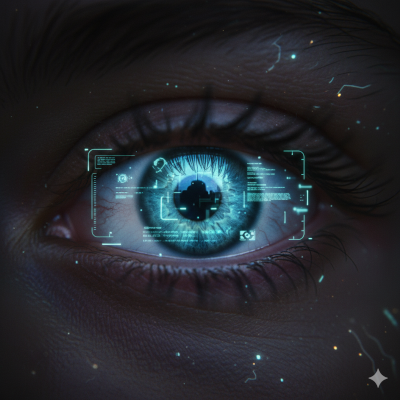

O Aprimoramento da Percepção: Implantes Oculares
Nesta metrópole de concreto e hologramas, a realidade é uma tela a ser personalizada. Os implantes oculares da corporação Omni-Tech não são apenas melhorias, são uma nova forma de ver o mundo. Com eles, a poluição visual das ruas se transforma em um fluxo de dados em tempo real, sobrepondo informações vitais à paisagem urbana. Anúncios, perfis de transeuntes, alertas de segurança... tudo ao alcance de um piscar de olhos. Mas a que custo se troca a visão natural pela onisciência digital?
